Is Model Ensemble Necessary?
Model-based RL via a Single Model with Lipschitz Regularized Value Function
Ruijie Zheng *1 Xiyao Wang *1 Huazhe Xu2,3 Furong Huang1
1 University of Maryland College Park 2 Tsinghua University 3 Shanghai Qi Zhi InstituteAbstract
Probabilistic dynamics model ensemble is widely used in existing model-based reinforcement learning methods as it outperforms a single dynamics model in both asymptotic performance and sample efficiency.
In this paper, we provide both practical and theoretical insights on the empirical success of the probabilistic dynamics model ensemble through the lens of Lipschitz continuity.
We find that, for a value function, the stronger the Lipschitz condition is, the smaller the gap between the true dynamics- and learned dynamics-induced Bellman operators is,
thus enabling the converged value function to be closer to the optimal value function.
Hence, we hypothesize that the key functionality of the probabilistic dynamics model ensemble is to regularize the Lipschitz condition of the value function using generated samples.
To validate this hypothesis, we devise two practical robust training mechanisms through computing the adversarial noise and regularizing the value network’s spectral norm to directly regularize the Lipschitz condition of the value functions. Empirical results show that combined with our mechanisms, model-based RL algorithms with a single dynamics model outperform those with ensemble of the probabilistic dynamics models. These findings not only support the theoretical insight, but also provide a practical solution for developing computationally efficient model-based RL algorithms.
Recipe of model-based RL algorithm

An Empirical Observation
Empirically, we find that MBPO [1] with an ensemble of probabilistic dynamics models performs significantly better than using only a single model or an ensemble of deterministic models.
The figure on the left is the learning curve on the Humanoid environment, and the figure on the right is on the Walker2d environment.
We also observe similar results across every other Mujoco environment.
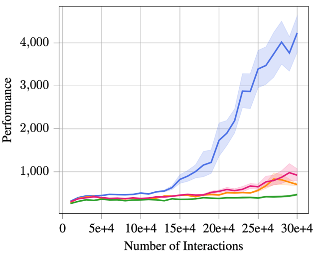 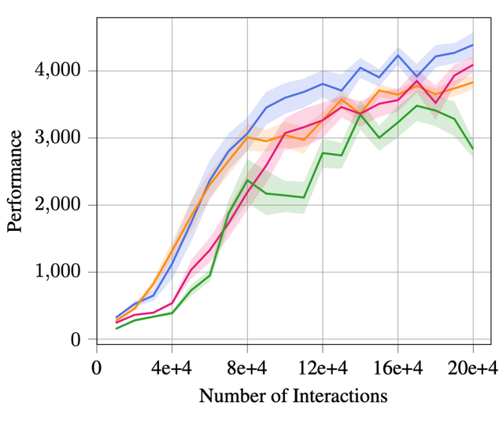
An Important Concept: value-aware model error
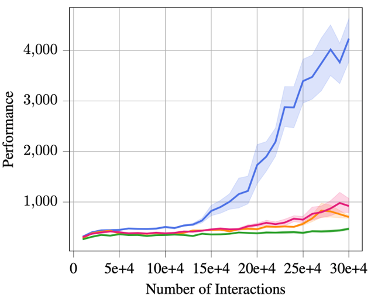 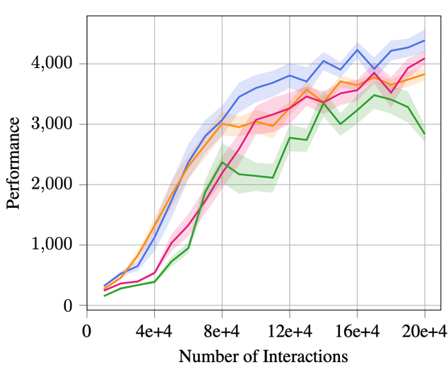
Key Insight
For a model-based RL algorithm, even if the trained environment model gives a very accurate prediction,
the error could still be amplified by the so-called value-aware model error [2] if the agent's value function
has a very bad Lipschitz condition.
Lipschitz Regularization of Value Function by Probabilistic Model Ensemble
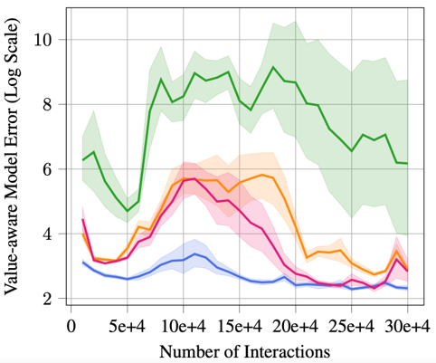 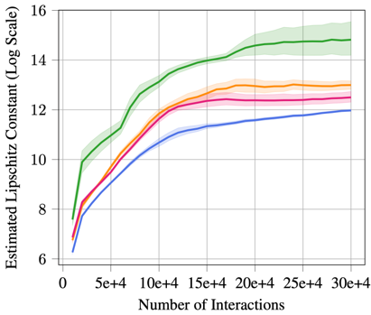
Improved Asymptotic Performance
Using just a single deterministic model, MBPO with our two Lipschitz regularization mechanisms achieves a
comparable and even better performance across all five tasks than MBPO with a probabilistic ensemble model.
In particular, the proposed robust regularization technique shows a larger advantage on three more sophisticated tasks: Humanoid, Ant,
and Walker.
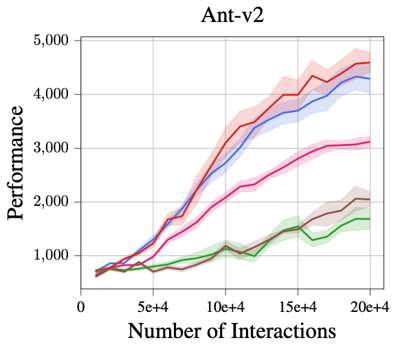 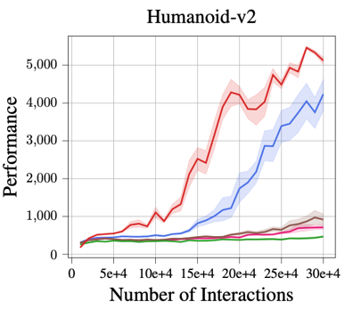 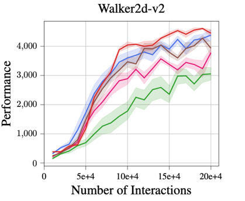 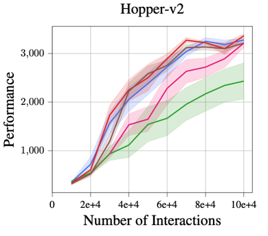
Improved Time Efficiency
Compared with MBPO using an ensemble of probabilistic models, our proposed mechanisms, especially robust regularization, is more time efficient.
[2] Farahmand et al. Iterative Value-Aware Model Learning. NeurIPS 2018
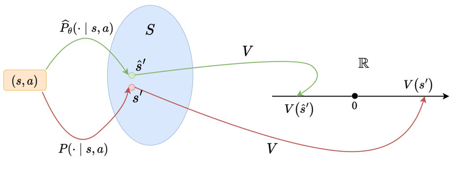
- Value functions trained based on data generated from probabilistic ensemble model have much smaller Lipschitz constants (the figure on the left).
- We can view data generated from the probabilistic ensemble model as an implicit augmentation. The augmentation comes from two sources, either variation of predictions across different models in the ensemble, or the noise added by the variance of each probabilistic distribution (e.x. Gaussian distribution in MBPO[1]).
- We verified our hypothesis empirically, and indeed we find that Lipschitz constant of the value function trained from probabilistic ensemble model is significantly smaller (the figure on the right).
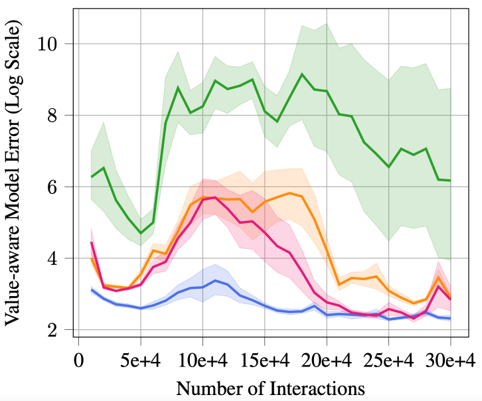 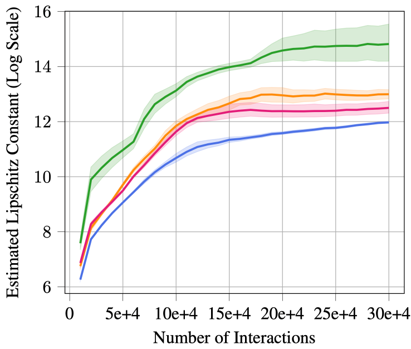
Our Proposed Methods
- Spectral Normalization: We add spectral normalization to every layer of the value network to control the upper bound of the global Lipschitz constant.
- Robust Regularization: We add a robust loss with adversarial perturbation to guarantee that the variation of the value function locally is small.
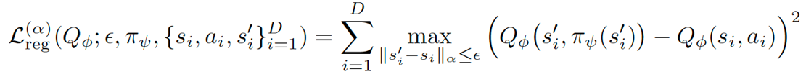
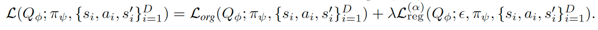
Results
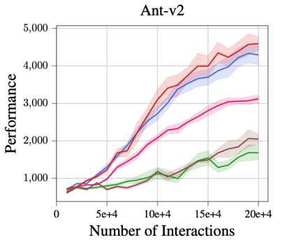 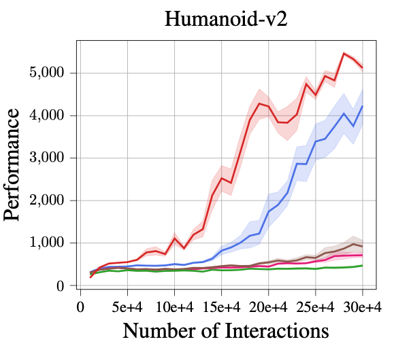 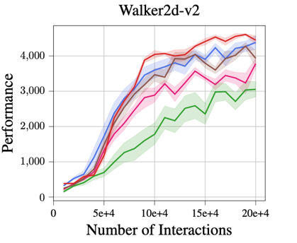 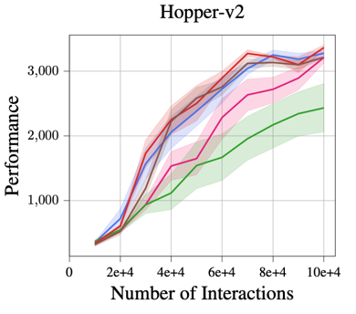
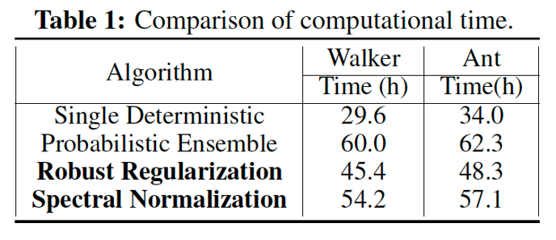
Poster
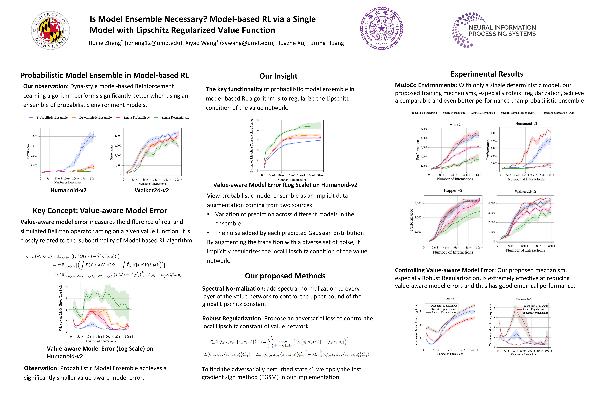
Reference
[2] Farahmand et al. Iterative Value-Aware Model Learning. NeurIPS 2018